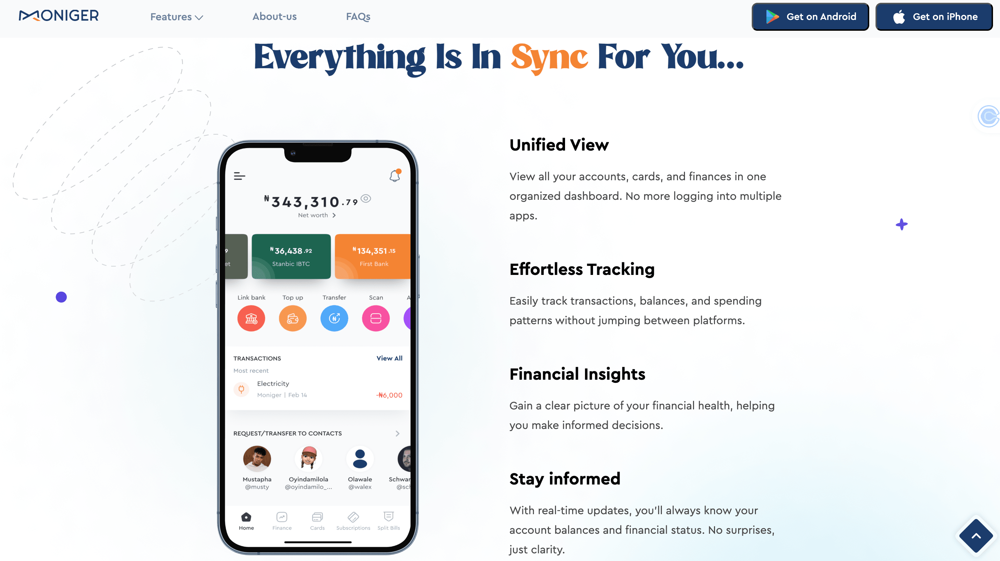
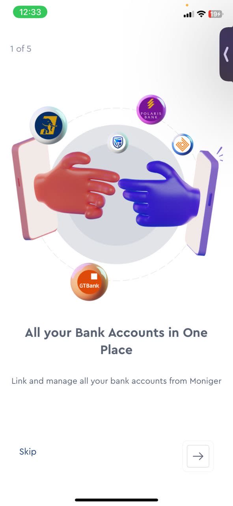

Making a Multi-Bank Product Sound Like One Bank
The product solved a real problem. The risk was explaining it in language dense enough to sound credible and simple enough to earn trust before anyone linked an account.

Design Problem
Users arrived already overwhelmed, manually tracking accounts across banks with no consolidated picture of their money.
My Role
Content strategy and design across mobile, web, and support, for 2+ years, managing a team of designers and writers.
What I Designed
A voice built from users' own words, a content-first design process, a style guide that held as the product scaled, and a knowledge base mapped to every stage of the user journey.
Overwhelmed before they ever linked an account
Moniger simplifies financial management, letting users link multiple bank accounts, track budgets, and manage subscriptions from a single view. Most people arrived at the product already overwhelmed, manually tracking accounts across different banks with no consolidated picture of their money.
The words came from the users, not the org chart
Getting there took more than a copy pass. Every touchpoint needed to earn a level of trust that financial products cannot fake, so the process started with listening rather than drafting.
Interviews and surveys with people already managing multiple bank accounts surfaced the exact words they used for their pain points, words that became the product's actual vocabulary instead of internal financial terminology. That research shaped three decisions that carried through every release since.
The default order, wireframes first and copy fitted in after, was rejected early: it locks screens around space for words no one has verified belong there. Copy went first instead, so every screen was sized to what actually needed to be understood.
Anchor Copy in Real Language
The words people used to describe their own pain points, not internal terminology, became the product's vocabulary.
Let Content Lead the Design
Copy shaped the design team's wireframes and prototypes, not the reverse. Every screen was built around how the information needed to be understood first.
Govern the Voice, Not Just the Words
A content style guide and A/B-tested copy gave the team a system for tone, voice, and messaging that held up as new features shipped.
None of those decisions worked in isolation. A style guide without content-first wireframes would have governed the wrong words. Research without a system to protect it would have faded by the second feature release. Together, they meant the product could grow without the voice drifting.
One vocabulary, applied at three different sizes
A word decision made once does not survive a product that ships every two weeks. The work had to hold at three levels, each answering a different question.
- ●Foundation. How should Moniger sound, and what should its financial terms mean? Voice principles and a vocabulary built from users' own words, not internal banking language.
- ●Pattern. How should a class of screens behave? A style guide and content-first design process that gave every notification, error, and confirmation the same underlying structure.
- ●Journey. How should the patterns hold across a real task? Web pages, mobile onboarding, and a help center, built end to end from the same foundation.
From a user's own words to a system that outlasted me
Research. Interviews and surveys with people already managing multiple bank accounts → a vocabulary the product could stand on instead of internal terminology.
Content-First Design. Copy shaped wireframes before visual design touched them → screens sized to what actually needed to be understood.
Pattern and Governance. A style guide plus A/B-tested copy became the shared reference for tone, voice, and messaging → one voice the team could apply without me in the room.
Documentation. Help center and blog content turned shipped decisions into infrastructure → content the team could sustain past the first release.
A challenged line returns to the standard and the evidence behind it, not only to the sentence that was questioned. That loop is what held the voice together for two years, not any single decision inside it.
The style guide won the argument, not instinct
That system was tested early, not just trusted. A product manager and product designer once pushed back on a piece of copy, certain it would not land with users. Instead of defending it on instinct, the case got made with evidence: the research behind the words, content testing data, and the alternative phrasing that had already been tried and had not worked. An A/B test settled it. The original copy won.
Every functional website depends on one thing in its hero sections: a simplified voice. Across Moniger's web pages, home, virtual cards, budgeting, finance manager, subscriptions, and account aggregation, the goal was clear, consistent microcopy pulled from research, not guesswork.
Before that copy touched a single wireframe, a closed card-sorting exercise defined the content hierarchy, so the information architecture reflected how users actually grouped these features, not how the org chart did.



The mobile app carried real complexity: accounts, budgets, and subscriptions, all needing one consistent flow. A splash screen and the Nickel Tour approach to onboarding, a multi-step progress indicator, always showed users exactly where they stood.
Research surfaced two distinct segments: people juggling multiple bank accounts, and people who wanted to track spending on the go without opening a spreadsheet. Every piece of copy was tested against both before it shipped.


Every stage of the journey has an answer waiting
The engagement went beyond shipping copy for a single release. A single person holding the voice together by memory does not survive a second year of feature releases, so the deliverable had to be infrastructure that let Moniger's team keep creating strong content without me in the room. Help center documentation was mapped to each stage of the user journey, from account setup and bank linking to budgeting and subscription management, so users could resolve questions the moment they hit them. Blog content extended that same positioning beyond the app itself.
- ✓Consistent microcopy across home, virtual cards, budgeting, finance manager, subscriptions, and account aggregation pages, built on a content-first information architecture.
- ✓A mobile onboarding flow, including a splash screen and the Nickel Tour approach, tested against two distinct user segments before release.
- ✓A self-serve help center and knowledge base mapped to the full user journey, from account setup and bank linking to budgeting and subscriptions.
- ✓Supporting blog content extending the product's positioning beyond the app itself.
- ✓A content system and style guide governing tone, voice, and messaging across mobile, web, and support, built to outlast any single release.
The system held for two years
That system held. Two years in, the numbers leading this page, a 25% increase in conversions and an 8% reduction in onboarding drop-off, came from the same discipline: research first, content-first wireframes, and a style guide that kept the voice consistent long after the first release shipped.
Complexity in a product does not have to become complexity in the copy. On Moniger, the words carried the weight so the interface never had to.
Building a product with a similarly complex story to tell?
I'd love to hear about your team and where content strategy could help.
Let's work together →